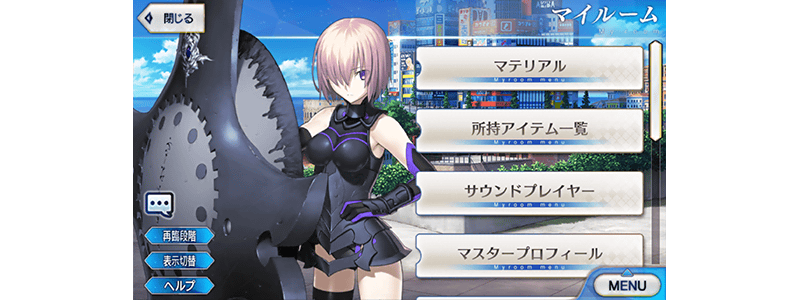

舉辦「Fate/Requiem×Fate/Grand Order聯動活動開幕前夕宣傳活動」！
◆舉辦期間◆
2020年5月17日(日) 17:00～6月1日(一) 2:59
※本頁面皆為開發中圖片。會有與實際圖片相異的情況。
預定自2020年5月22日(五) 12:00為了遊戲功能修改維修約5小時。
請注意維修中無法遊玩「Fate/Grand Order」。
詳細時間決定後會在公告報告。
Fate/Requiem 概要
「我是死神――從事殺死從者的工作」
―――以前有著一場大戰。
戰爭結束後，世界迎來和平。現在無論誰都持有“聖杯”，招喚指示命運的從者。
只有一人，少女宇津見エリセ沒有擁有。
少女與世界上最後召喚從者的少年相遇。
但是她還不曉得自己的命運。
備受期待的第2集決定發售！
描寫聖杯戰爭《在那之後》的最先端『Fate』系列。
小說
書名:Fate/Requiem 2『懐想都市新宿』
作者:星空めてお
插畫:NOCO
發售日:2020年6月12日(五)
定價:1,000円(未稅)
Fate/Requiem 1『星巡る少年』免費宣傳活動舉辦中！
就是現在，Fate/Requiem 1『星巡る少年』免費閱讀宣傳活動舉辦中！
詳情請確認此處。
http://typemoon.com/news/2020/KUuKXN
※發售日因地域而異。
©TYPE-MOON
◆有關從者真名的注意◆
在2018年12月31日(二) 23:00以後新配信的主線故事及期間限定活動、一部份關卡、宣傳活動及召喚中，會顯示隱藏真名的對象從者真名。
※2018年12月31日(一) 22:59前已經配信的主線故事、復刻活動、一部份關卡中不在此限。

為了記念「Fate/Requiem×Fate/Grand Order聯動活動」的舉辦記念，實施特別登入獎勵。
在下述期間中合計7天內登入(1天算1次)的話，贈送最多黃金果實7個！
◆舉辦期間◆
2020年5月18日(一) 3:00～6月1日(一) 2:59
※在舉辦期間內合計7天內登入的話，可領取所有的登入獎勵。
◆贈送對象◆
2020年5月31日(日) 2:59前通過「特異點F 炎上汙染都市 冬木」的御主對象
※上述時間前，在管理室(ターミナル)畫面的關卡橫幅必須要有「CLEAR」的文字顯示。
| 登入次數 | 贈送內容 | |
|---|---|---|
| 第1次 |

|
黃金果實 1個 |
| 第2次 |
|
黃金果實 1個 |
| 第3次 |
|
黃金果實 1個 |
| 第4次 |
|
黃金果實 1個 |
| 第5次 |
|
黃金果實 1個 |
| 第6次 |
|
黃金果實 1個 |
| 第7次 |
|
黃金果實 1個 |
※登入獎勵會在每天3:00配發。 ※合計7天內能領取，但根據成為贈送對象的時間點，可能無法到此上限。
為了記念「Fate/Requiem×Fate/Grand Order聯動活動」的舉辦，個人空間(マイルーム)以期間限定變更成特別樣式！
◆舉辦期間◆
2020年5月17日(日) 17:00～5月31日(日) 11:59

在迦勒底之門內每天出現的關卡「蒐集種火」消耗AP量以期間限定變成1/2！(就算在戰鬥中撤退的情況，也會是同様的消耗量)
◆舉辦期間◆
2020年5月17日(日) 17:00～5月31日(日) 11:59
◆對象關卡◆
蒐集種火<槍・殺篇>初級、中級、上級、超級
蒐集種火<剣・騎篇>初級、中級、上級、超級
蒐集種火<弓・術篇>初級、中級、上級、超級
蒐集種火<隨機篇>初級、中級、上級、超級
下述的期間中，在進行強化「Fate/Requiem×Fate/Grand Order聯動活動」關聯從者時，大成功(經驗值2倍加成)・極大成功(經驗值3倍加成)的發生率以期間限定變成2倍！
務必藉此機會強化對象從者吧！
◆舉辦期間◆
2020年5月17日(日) 17:00～5月31日(日) 11:59
◆對象從者◆
| 職階 | 稀有度 | 從者名 |
|---|---|---|
| Archer | ★★★★ | Emiya〔Alter〕 |
| ★★★★ | 巴御前(Archer・地獄) | |
| Lancer | ★★★★ | 宇津見繪里世 |
| Rider | ★★★★ | 瑪莉・安東尼 |
| Caster | ★★★★ | 喀耳刻(俄刻阿諾斯的Caster) |
| ★★★★ | 湯瑪斯・愛迪生 | |
| ★★★★ | 童謠 | |
| ★ | 沃夫岡・阿瑪迪斯・莫札特 | |
| Assassin | ★★★★★ | 刑部姬 |
| Berserker | ★★★★ | 鬼女紅葉 |
| MoonCancer | ★★★★★ | 吉娜可＝加里吉利(偉大石像神) |
| Foreigner | ★★★★★ | Voyager |
| Shielder | ★★★ | 瑪琇・基利艾拉特 |
※5月25日(一) 19:00修正 ※「★5(SSR)吉娜可＝加里吉利(偉大石像神)」為「★5(SSR)偉大石像神」靈基再臨到第2階段的話名稱會變成「★5(SSR)吉娜可＝加里吉利」。

下述的期間中，在關卡開始時的支援選擇畫面，選擇其他御主的對象從者當支援情況、其他御主選擇自己的對象從者當支援情況的友情點數獲得量變成2倍。
將好友和跟隨的御主等做為支援能選擇從者和概念禮裝的編成列入考量，藉此機會入手更多友情點數吧！
◆舉辦期間◆
2020年5月17日(日) 17:00～5月31日(日) 11:59
◆對象從者◆
| 職階 | 稀有度 | 從者名 |
|---|---|---|
| Archer | ★★★★ | Emiya〔Alter〕 |
| ★★★★ | 巴御前(Archer・地獄) | |
| Lancer | ★★★★ | 宇津見繪里世 |
| Rider | ★★★★ | 瑪莉・安東尼 |
| Caster | ★★★★ | 喀耳刻(俄刻阿諾斯的Caster) |
| ★★★★ | 湯瑪斯・愛迪生 | |
| ★★★★ | 童謠 | |
| ★ | 沃夫岡・阿瑪迪斯・莫札特 | |
| Assassin | ★★★★★ | 刑部姬 |
| Berserker | ★★★★ | 鬼女紅葉 |
| MoonCancer | ★★★★★ | 吉娜可＝加里吉利(偉大石像神) |
| Foreigner | ★★★★★ | Voyager |
| Shielder | ★★★ | 瑪琇・基利艾拉特 |
※5月25日(一) 19:00修正 ※「★5(SSR)吉娜可＝加里吉利(偉大石像神)」為「★5(SSR)偉大石像神」靈基再臨到第2階段的話名稱會變成「★5(SSR)吉娜可＝加里吉利」。 ※非好友的御主也會是友情點數獲得量2倍的對象。 ※請注意NPC從者即使是對象從者也在友情點數獲得量2倍的對象外。
下述的期間中。「Fate/Requiem×Fate/Grand Order聯動活動」關聯從者的強化關卡消耗AP量變成1/2！(就算在戰鬥中撤退的情況，也會是同様的消耗量)
藉此機會通過尚未通過的從者強化關卡吧！
◆舉辦期間◆
2020年5月17日(日) 17:00～5月31日(日) 11:59
◆對象從者◆
| 職階 | 稀有度 | 從者名 |
|---|---|---|
| Archer | ★★★★ | Emiya〔Alter〕 |
| Rider | ★★★★ | 瑪莉・安東尼 |
| Caster | ★★★★ | 湯瑪斯・愛迪生 |
| ★ | 沃夫岡・阿瑪迪斯・莫札特 | |
| Assassin | ★★★★★ | 刑部姬 |
下述的期間中，「Fate/Requiem×Fate/Grand Order聯動活動」關聯從者的幕間物語消耗AP量變成1/2！(就算在戰鬥中撤退的情況，也會是同様的消耗量)
藉此機會滿足開放條件，通過對象從者的物語吧！
◆舉辦期間◆
2020年5月17日(日) 17:00～5月31日(日) 11:59
◆對象從者◆
| 職階 | 稀有度 | 從者名 |
|---|---|---|
| Archer | ★★★★ | Emiya〔Alter〕 |
| ★★★★ | 巴御前(Archer・地獄) | |
| Rider | ★★★★ | 瑪莉・安東尼 |
| Caster | ★★★★ | 喀耳刻(俄刻阿諾斯的Caster) |
| ★★★★ | 湯瑪斯・愛迪生 | |
| ★★★★ | 童謠 | |
| ★ | 沃夫岡・阿瑪迪斯・莫札特 | |
| Assassin | ★★★★★ | 刑部姬 |
其他還有，期間限定「Fate/Requiem聯動活動開幕前夕Pick Up召喚(每日交替)」同時舉辦！
另外，「Fate/Requiem×Fate/Grand Order聯動活動」舉辦預定！
關於詳情，請自下述橫幅確認。
■「Fate/Requiem聯動活動開幕前夕Pick Up召喚(每日交替)」詳細情報